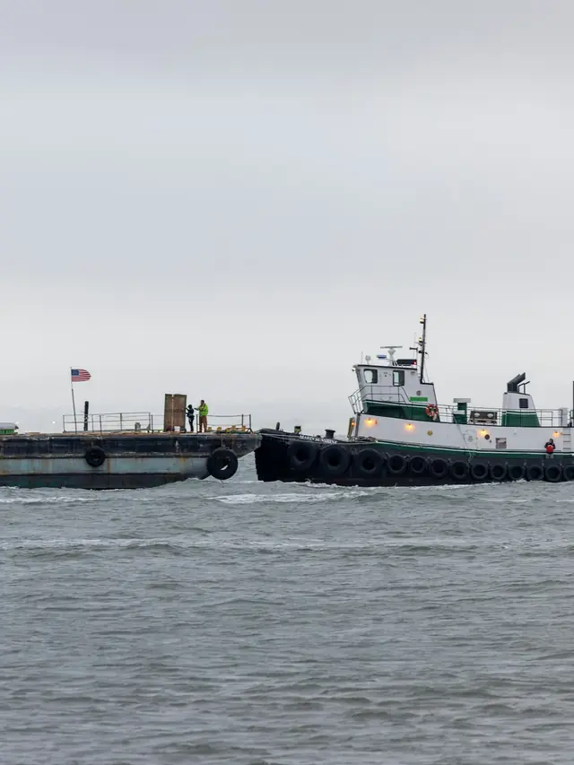

Typical for the region, not a schedule or a price. Any yard can help.
How a remote package works
Four legs. One package.
A building bound for a place with no lumber yard cannot be one box of hangers short. One complete package beats a second freight bill.
01
Plans in, take-off out
Send drawings or a list. We help with the take-off and quote the materials.
02
Package and crate
The complete package comes together, crated and packaged for the trip.
03
Work out the freight
We work with you on all aspects of shipping coordination, dock delivery and rural Alaska delivery.
04
Dock or site delivery
Delivered to the dock or straight to the site.
How far north
71°north.
Utqiaġvik, on the Arctic coast, is the northernmost community in Alaska. It is still on our map: delivery is available from Sitka to Utqiaġvik, anywhere in the state.
How it travels depends on where it is going. Often it is more than one of these.
Truck
The road system
The road system links Anchorage, the Kenai Peninsula, the Mat-Su, Fairbanks, Valdez, Tok and, by the Dalton Highway, the North Slope. Job sites along it are typically reached by truck.
Sea
Ocean freight & barge
Southeast Alaska is reached by sea. Western and northern communities generally rely on barge in the ice-free season. We work with you on shipping coordination and dock delivery.
Air
Air cargo
Off the road system, communities receive freight by air year-round. Tell us where you’re building and we’ll work out how to get it there.
Plan around the season. Off the road system, barges run only in the ice-free season, so plan for the barge window first. Call a yard early.
Yes. Delivery is available anywhere in Alaska, from Sitka to Utqiaġvik (Barrow). Tell us where the job is. We will quote the package and work out the freight with you.
When should I order for barge season?
Early. Off the road system, barges run in the ice-free season, so plan for the barge window first. Ask your yard what yours looks like.
Do you ship complete building packages?
Yes. We are fully equipped to handle remote-location and export building packages, with crating and packaging for the trip.
Can you work from my plans?
Yes. Send drawings or a materials list. We offer material take-off assistance and estimates, and design services for your unique project needs.
Who coordinates the shipping?
We work with you on all aspects of shipping coordination, dock delivery and rural Alaska delivery.

A tug pushing a loaded freight bargePhoto: Royce Fonseca / Unsplash
Remote & export packages
Building off the road system?
Send plans or a list and tell us where the job is. We will quote the package and work out the freight with you.